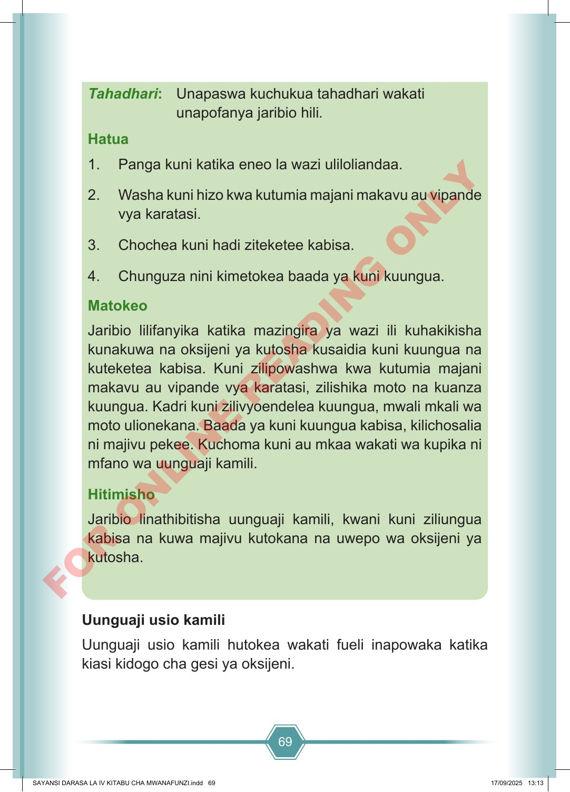

69 Tahadhari: Unapaswa kuchukua tahadhari wakati unapofanya jaribio hili. Hatua 1. Panga kuni katika eneo la wazi uliloliandaa. 2. Washa kuni hizo kwa kutumia majani makavu au vipande vya karatasi. 3. Chochea kuni hadi ziteketee kabisa. 4. Chunguza nini kimetokea baada ya kuni kuungua. Matokeo Jaribio lilifanyika katika mazingira ya wazi ili kuhakikisha kunakuwa na oksijeni ya kutosha kusaidia kuni kuungua na kuteketea kabisa. Kuni zilipowashwa kwa kutumia majani makavu au vipande vya karatasi, zilishika moto na kuanza kuungua. Kadri kuni zilivyoendelea kuungua, mwali mkali wa moto ulionekana. Baada ya kuni kuungua kabisa, kilichosalia ni majivu pekee. Kuchoma kuni au mkaa wakati wa kupika ni mfano wa uunguaji kamili. Hitimisho Jaribio linathibitisha uunguaji kamili, kwani kuni ziliungua kabisa na kuwa majivu kutokana na uwepo wa oksijeni ya kutosha. Uunguaji usio kamili Uunguaji usio kamili hutokea wakati fueli inapowaka katika kiasi kidogo cha gesi ya oksijeni. SAYANSI DARASA LA IV KITABU CHA MWANAFUNZI.indd 69 SAYANSI DARASA LA IV KITABU CHA MWANAFUNZI.indd 69 17/09/2025 13:13 17/09/2025 13:13 F O R O N L I N E R E A D I N G O N L Y